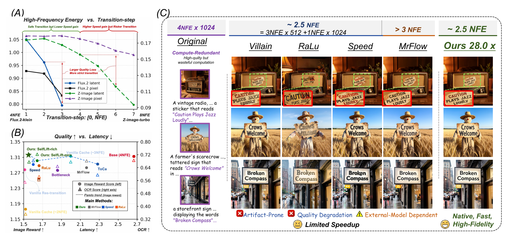

Overview
Abstract
SelfLift accelerates high-resolution diffusion generation by moving most denoising computation to a low-resolution rollout, then performing a native high-resolution transition that preserves clean content while selectively lifting uncertain or artifact-prone details. SelfLift-zero introduces an artifact-aware transition module that combines latent and pixel branches, detects risky transition regions, and applies masked lifting before the final high-resolution rollout.
SelfLift-rich further improves this transition through on-policy self-lift fine-tuning, using the model's own low-to-high-resolution trajectories as supervision. Across FLUX.2-Klein-9B and Z-Image-Turbo, SelfLift improves the speed-quality trade-off while retaining strong image quality and rule-following behavior.
Qualitative Comparison
Visual Results
SelfLift keeps the page centered on what matters: fast generation without the blur, drift, and text artifacts that often appear during aggressive resolution transition.

Approach
Method
The method combines a low-resolution rollout, an artifact-aware lifting transition, and a short high-resolution rollout.

Quantitative Evaluation
Main Results
SelfLift is evaluated against caching, transition, and acceleration baselines on both FLUX.2-Klein-9B and Z-Image-Turbo.